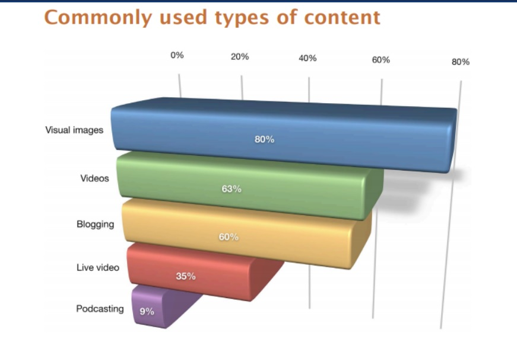

The truth is there are multiple ways to use social media for building brand awareness. And, the best part is, you can explore them all if you choose. Here are a few ways social media can supercharge your brand awareness.
Social sites are a playground for engaging with one another. This lends it to be a great place for you to engage with customers at every stage of their journey with you. Whether they are potential leads, current customers, or people you are trying to get back. You have multiple ways to engage. Be it through conversation, a retargeting, ads, etc.
You may have seen your favorite brands sharing their content on their social platforms. Many brands like to use this a space to push out their blogs, videos, and other content they have worked hard on. This is simply because their following is likely to be people who are interested in what they have to say, not to mention may find it useful. By sharing content, you are also making it easier for people to see it, find it, and share it. Meaning you have the potential to build brand awareness by sharing your owned content.
This is an obvious one. But, social sharing happens on these platforms. And social sharing can be quite impactful for a brand. By creating something shareworthy, a brand can extend their reach. Think of Wendy’s comebacks on Twitter. That created a fan uproar, and thousands of retweets because people found it funny. If you create something that people find funny, believe in, or can have an emotional attachment towards, you’ll find it is an easy thing to share.
Honestly, there are a variety of ways you can increase brand awareness through social media. Some of which falls under topics that we have already covered in this article. Like using a tool to track social mentions and engagement analytics and creating shareable content. So, we’re going to discuss the top 5 steps we think matter most.
They do say an image is worth a thousand words… and it’s true. Visuals are appealing. People will actually stop scrolling to stare at something if it’s interesting. You can find ways to incorporate your brand into images too, to help make your logo or name more well-known. After all, you first have to start with brand recognition before you can work towards achieving brand awareness. Think of the content you share, you likely add an image because it helps break up the text and allows you to help explain what you’re talking about. You might also use visuals like gifs or memes to reply to comments or to just add some fun to your feed. The point is, a good visual can make your shareable. Which can pave the way for you to achieve high brand awareness.
Automation is cool, in fact, it’s great. But, you have to do it wisely. Meaning what you might tweet isn’t really what you’d want to say on Facebook. There are limits with Twitter updates and the use of hashtags. The same cannot be said for Facebook. You have more room to talk and hashtags don’t work quite as well. So, if you’re automizing your social profiles, at least take the time to create a specific message for each. Even if it’s to talk about the same thing. You need to make the message native to the platform for the best chance of it catching someone’s eye. You’ll need to consider what else should be done for other platforms as well. Instagram can be great, but you need a killer image and a quick-wit caption to relay your message.
You aren’t doing yourself any favors if you don’t actually communicate with others. Connecting with other brands, customers, influencers, and so on is how you can create a name for yourself. You’ll be able to increase your brand awareness and show that you know what you’re talking about. Plus, If you participate in engagement yourself, others will see that it’s not just a one-way street. By doing so, you’ll also likely see an increase in your social currency, and find that people are more likely to mention and recommend you.
What do we mean by consistent? In this instance we’re not talking about posting regularly (though that is important too), we’re talking about your brand. Do your social media profiles reflect your brand? You need to make it clear who you are because this leads to strong brand recognition and thus creates awareness. You’ll want to make sure your logo is definitely on your profiles somewhere. The logo (aside from your name) is the easiest indicator it’s you. To make things even clearer, use the same language, colors, and images (or at least similar ones) so that it’s a clear cut sign who you are. It makes it much easier for tagging you too!
A social media ad can be a great addition to your overall social media strategy. If you use paid ads and campaigns wisely, you have great potential for increasing brand awareness. Whether you try your hand with influencers, referral marketing, or simply promote your content, you can reach a specific goal. These types of campaigns are easy to track and manage, which often helps smooth out bumps and that’s what makes them successful.